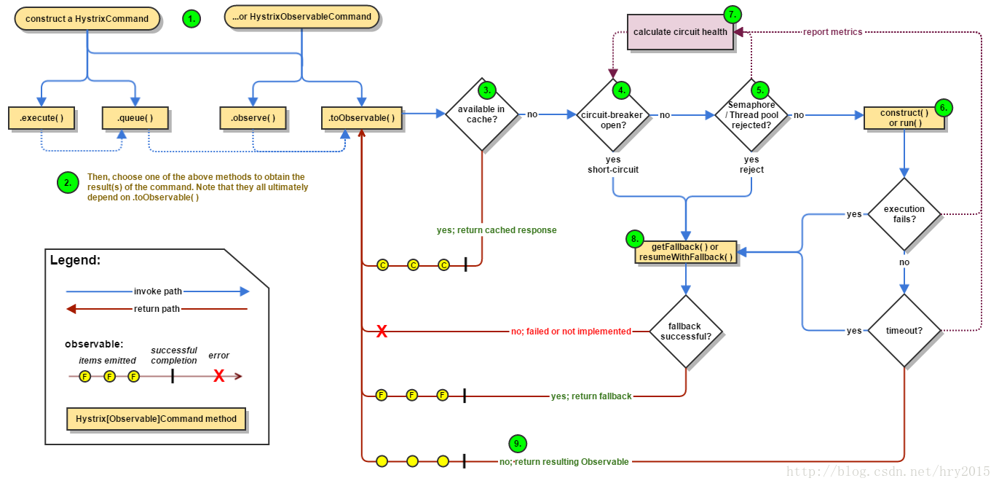
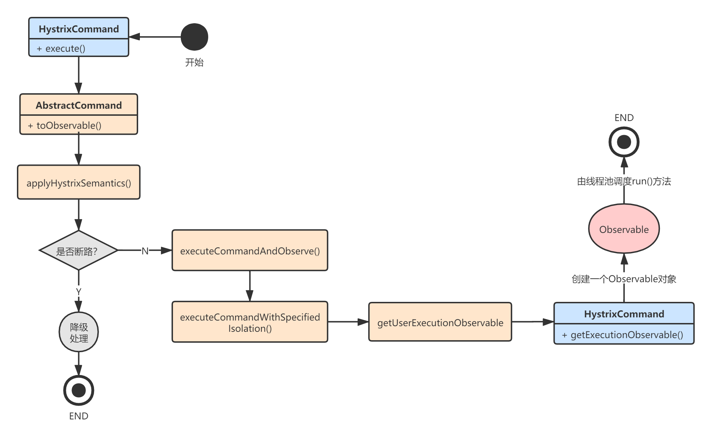

透彻理解Spring Cloud系列（三四）——Hystrix工作流程：HystrixCommand整体分析
无论是与Feign整合，还是独立使用Hystrix，最终都会调用HystrixCommand.execute()触发Hystrix的工作流程。所以对源码的分析最终回到了Netflix Hystrix本身。从本章开始，我将直接分析Netflix Hystrix的源码，我们先从HystrixCommand开始，重点关注它的核心逻辑，忽略与RxJava相关的代码。
这么说不是很准确，HystrixCommand提供了四种执行方法，但底层是一样的，本章仅以exetute进行分析。关于Hystrix的底层工作机制，最好的参考资料就是Netflix的官方文档：https://github.com/Netflix/Hystrix/wiki/How-it-Works，建议各位把官方文档看完再来看我的文章。
一、HystrixCommand初始化
HystrixCommand本身的源码是比较简单的，复杂点在于它的父类AbstractCommand。我们先从HystrixCommand的初始化构造开始。当我们构建具体的HystrixCommand对象时，最终会调用AbstractCommand的构造器：
protected AbstractCommand(HystrixCommandGroupKey group, HystrixCommandKey key,
HystrixThreadPoolKey threadPoolKey, HystrixCircuitBreaker circuitBreaker,
HystrixThreadPool threadPool,
HystrixCommandProperties.Setter commandPropertiesDefaults,
HystrixThreadPoolProperties.Setter threadPoolPropertiesDefaults,
HystrixCommandMetrics metrics, TryableSemaphore fallbackSemaphore,
TryableSemaphore executionSemaphore,
HystrixPropertiesStrategy propertiesStrategy,
HystrixCommandExecutionHook executionHook) {
// 设置groupKey、commandKey、threadPoolKey、Command属性
this.commandGroup = initGroupKey(group);
this.commandKey = initCommandKey(key, getClass());
this.properties = initCommandProperties(this.commandKey, propertiesStrategy,
commandPropertiesDefaults);
this.threadPoolKey = initThreadPoolKey(threadPoolKey, this.commandGroup, this.properties.executionIsolationThreadPoolKeyOverride().get());
// 初始化HystrixCommandMetrics，用于统计调用信息（用于熔断）
this.metrics = initMetrics(metrics, this.commandGroup, this.threadPoolKey,
this.commandKey, this.properties);
// 初始化断路器
this.circuitBreaker = initCircuitBreaker(this.properties.circuitBreakerEnabled().get(),
circuitBreaker, this.commandGroup, this.commandKey,
this.properties, this.metrics);
// 初始化线程池
this.threadPool = initThreadPool(threadPool, this.threadPoolKey, threadPoolPropertiesDefaults);
//Strategies from plugins
this.eventNotifier = HystrixPlugins.getInstance().getEventNotifier();
this.concurrencyStrategy = HystrixPlugins.getInstance().getConcurrencyStrategy();
HystrixMetricsPublisherFactory.createOrRetrievePublisherForCommand(this.commandKey,
this.commandGroup,
this.metrics,
this.circuitBreaker,
this.properties);
this.executionHook = initExecutionHook(executionHook);
// 请求缓存
this.requestCache = HystrixRequestCache.getInstance(this.commandKey, this.concurrencyStrategy);
// 请求日志
this.currentRequestLog = initRequestLog(this.properties.requestLogEnabled().get(),
this.concurrencyStrategy);
/* fallback semaphore override if applicable */
this.fallbackSemaphoreOverride = fallbackSemaphore;
/* execution semaphore override if applicable */
this.executionSemaphoreOverride = executionSemaphore;
}
上面构造器的核心功能就是断路器、线程池的初始化。
二、HystrixCommand执行
接着，我们再来看HystrixCommand的执行流程。我省略了很多代码，我们重点关注HystrixCommand.execute()的整体执行流程。我下面要讲解的内容就是Hystrix官方的这张图，可以先看下以便有个印象：

2.1 AbstractCommand
HystrixCommand.execute()的内部调用了HystrixCommand.queue().get()，而HystrixCommand.queue()返回的是一个Future对象，这个Future对象的get方法实际是调用了toObservable().toBlocking().toFuture().get();：
public abstract class HystrixCommand<R> extends AbstractCommand<R>
implements HystrixExecutable<R>, HystrixInvokableInfo<R>, HystrixObservable<R> {
//...省略构造器
// Setter用于对HystrixCommand进行参数配置
final public static class Setter {
protected final HystrixCommandGroupKey groupKey;
protected HystrixCommandKey commandKey;
protected HystrixThreadPoolKey threadPoolKey;
protected HystrixCommandProperties.Setter commandPropertiesDefaults;
protected HystrixThreadPoolProperties.Setter threadPoolPropertiesDefaults;
//...省略一堆设置属性的方法
}
private final AtomicReference<Thread> executionThread = new AtomicReference<Thread>();
private final AtomicBoolean interruptOnFutureCancel = new AtomicBoolean(false);
// 核心执行方法，子类实现，这个方法最终会在execute()/queue()方法执行时被唤起
protected abstract R run() throws Exception;
// 降级逻辑，子类实现
protected R getFallback() {
throw new UnsupportedOperationException("No fallback available.");
}
// 同步执行方法
public R execute() {
try {
return queue().get();
} catch (Exception e) {
throw Exceptions.sneakyThrow(decomposeException(e));
}
}
// 异步执行方法
public Future<R> queue() {
// 原生的情况下，Future是不支持cancel()方法中止执行线程的，所以用delegate包装下
final Future<R> delegate = toObservable().toBlocking().toFuture();
final Future<R> f = new Future<R>() {
@Override
public R get() throws InterruptedException, ExecutionException {
return delegate.get();
}
//...
};
if (f.isDone()) {
try {
f.get();
return f;
} catch (Exception e) {
//...
}
}
return f;
}
//...
}
真是绕得一批，还是借用Hystrix官方的图来表述比较清晰：

可以看到当我们调用HystrixCommand.execute()时，最终会触发Observable.toBlocking().toFuture().get()的执行，阻塞获取结果。
Observable是RxJava中的东西，我不想过多讲解，现在你只要知道，HystrixCommand内部调用的是父类AbstractCommand的toObservable()。
2.2 请求缓存
我们来看下AbstractCommand.toObservable()的执行逻辑：
// AbstractCommand.java
public Observable<R> toObservable() {
// _cmd指向HystrixCommand的具体实现对象
final AbstractCommand<R> _cmd = this;
// ...
final Func0<Observable<R>> applyHystrixSemantics = new Func0<Observable<R>>() {
@Override
public Observable<R> call() {
if (commandState.get().equals(CommandState.UNSUBSCRIBED)) {
return Observable.never();
}
// 关键：这里执行Command的主流程
return applyHystrixSemantics(_cmd);
}
};
return Observable.defer(new Func0<Observable<R>>() {
@Override
public Observable<R> call() {
//...
final boolean requestCacheEnabled = isRequestCachingEnabled();
// 1.获取缓存Key
final String cacheKey = getCacheKey();
// 2.如果开启了Hystrix缓存功能，先尝试从缓存中获取
if (requestCacheEnabled) {
HystrixCommandResponseFromCache<R> fromCache =
(HystrixCommandResponseFromCache<R>) requestCache.get(cacheKey);
if (fromCache != null) {
isResponseFromCache = true;
return handleRequestCacheHitAndEmitValues(fromCache, _cmd);
}
}
// 3.缓存中获取不到，触发applyHystrixSemantics执行
Observable<R> hystrixObservable =
Observable.defer(applyHystrixSemantics)
.map(wrapWithAllOnNextHooks);
// 4.将执行结果缓存
Observable<R> afterCache;
if (requestCacheEnabled && cacheKey != null) {
HystrixCachedObservable<R> toCache = HystrixCachedObservable
.from(hystrixObservable, _cmd);
HystrixCommandResponseFromCache<R> fromCache = (HystrixCommandResponseFromCache<R>)
requestCache.putIfAbsent(cacheKey, toCache);
//...
} else {
afterCache = hystrixObservable;
}
return afterCache
.doOnTerminate(terminateCommandCleanup)
.doOnUnsubscribe(unsubscribeCommandCleanup)
.doOnCompleted(fireOnCompletedHook);
}
});
}
可以看到，上述方法的执行逻辑是：
- 如果开启了缓存功能，则首先尝试从缓存中获取结果，获取到则直接返回结果；
- 如果缓存中没有，则触发
applyHystrixSemantics()方法的执行，该方法会触发HystrixCommand的主执行流程； - 最后，如果开启了缓存，则将缓存结果并返回。
2.3 正常调用流程
接着，我们进入主流程，也就是AbstractCommand.applyHystrixSemantics()方法：
- 首先判断下熔断状态，如果断路器没打开就进入正常调用流程；
- 如果断路器打开了就走降级流程。
// AbstractCommand.java
private Observable<R> applyHystrixSemantics(final AbstractCommand<R> _cmd) {
// 内部什么都没做
executionHook.onStart(_cmd);
// circuitBreaker熔断判断
// 1.1 如果断路器未开启
if (circuitBreaker.allowRequest()) {
// 正常执行流程，隔离策略如果是线程池隔离，则什么都不做
final TryableSemaphore executionSemaphore = getExecutionSemaphore();
final AtomicBoolean semaphoreHasBeenReleased = new AtomicBoolean(false);
final Action0 singleSemaphoreRelease = new Action0() {
@Override
public void call() {
if (semaphoreHasBeenReleased.compareAndSet(false, true)) {
executionSemaphore.release();
}
}
};
final Action1<Throwable> markExceptionThrown = new Action1<Throwable>() {
@Override
public void call(Throwable t) {
// 异常时事件通知
eventNotifier.markEvent(HystrixEventType.EXCEPTION_THROWN, commandKey);
}
};
// 对于线程池隔离，一定返回true
if (executionSemaphore.tryAcquire()) {
try {
executionResult = executionResult.setInvocationStartTime(System.currentTimeMillis());
// 关键是这里：executeCommandAndObserve
return executeCommandAndObserve(_cmd)
.doOnError(markExceptionThrown)
.doOnTerminate(singleSemaphoreRelease)
.doOnUnsubscribe(singleSemaphoreRelease);
} catch (RuntimeException e) {
return Observable.error(e);
}
} else {
// 信号量获取失败，则走降级策略
return handleSemaphoreRejectionViaFallback();
}
}
// 1.2 如果断路器已开启
else {
// 降级流程
return handleShortCircuitViaFallback();
}
}
在上述的正常调用流程中，根据不同的资源隔离策略做了不同的处理，默认为线程池隔离策略，我们也主要关注这条线的执行逻辑。最终由executeCommandAndObserve这个方法触发调用：
// AbstractCommand.java
private Observable<R> executeCommandAndObserve(final AbstractCommand<R> _cmd) {
final HystrixRequestContext currentRequestContext = HystrixRequestContext
.getContextForCurrentThread();
//...
Observable<R> execution;
// 关键看这里，方法executeCommandWithSpecifiedIsolation
if (properties.executionTimeoutEnabled().get()) {
execution = executeCommandWithSpecifiedIsolation(_cmd)
.lift(new HystrixObservableTimeoutOperator<R>(_cmd));
} else {
execution = executeCommandWithSpecifiedIsolation(_cmd);
}
return execution.doOnNext(markEmits)
.doOnCompleted(markOnCompleted)
.onErrorResumeNext(handleFallback)
.doOnEach(setRequestContext);
}
executeCommandAndObserve方法内部调用了的AbstractCommand.executeCommandWithSpecifiedIsolation()：
// AbstractCommand.java
private Observable<R> executeCommandWithSpecifiedIsolation(final AbstractCommand<R> _cmd) {
// 1.线程池隔离
if (properties.executionIsolationStrategy().get() == ExecutionIsolationStrategy.THREAD) {
return Observable.defer(new Func0<Observable<R>>() {
@Override
public Observable<R> call() {
executionResult = executionResult.setExecutionOccurred();
if (!commandState.compareAndSet(CommandState.OBSERVABLE_CHAIN_CREATED,
CommandState.USER_CODE_EXECUTED)) {
return Observable.error(new IllegalStateException("execution attempted while in state : " + commandState.get().name()));
}
metrics.markCommandStart(commandKey, threadPoolKey, ExecutionIsolationStrategy.THREAD);
if (isCommandTimedOut.get() == TimedOutStatus.TIMED_OUT) {
return Observable.error(new RuntimeException("timed out before executing run()"));
}
if (threadState.compareAndSet(ThreadState.NOT_USING_THREAD, ThreadState.STARTED)) {
HystrixCounters.incrementGlobalConcurrentThreads();
threadPool.markThreadExecution();
endCurrentThreadExecutingCommand = Hystrix.
startCurrentThreadExecutingCommand(getCommandKey());
executionResult = executionResult.setExecutedInThread();
try {
executionHook.onThreadStart(_cmd);
executionHook.onRunStart(_cmd);
executionHook.onExecutionStart(_cmd);
// 关键是这里：getUserExecutionObservable
return getUserExecutionObservable(_cmd);
} catch (Throwable ex) {
return Observable.error(ex);
}
} else {
return Observable
.error(new RuntimeException("unsubscribed before executing run()"));
}
}
}).doOnTerminate(new Action0() {
@Override
public void call() {
//...
}
}).doOnUnsubscribe(new Action0() {
@Override
public void call() {
//...
}
}).subscribeOn(threadPool.getScheduler(new Func0<Boolean>() {
@Override
public Boolean call() {
//...
}
}));
}
// 信号量隔离
else {
//...
}
}
我省略了信号量隔离策略的代码，我们只关注executeCommandWithSpecifiedIsolation内部最核心的一行代码，也就是return getUserExecutionObservable(_cmd)：，它内部最终会执行HystrixCommand.run()：
// AbstractCommand.java
private Observable<R> getUserExecutionObservable(final AbstractCommand<R> _cmd) {
Observable<R> userObservable;
try {
// 创建一个Observable对象
userObservable = getExecutionObservable();
} catch (Throwable ex) {
userObservable = Observable.error(ex);
}
return userObservable
.lift(new ExecutionHookApplication(_cmd))
.lift(new DeprecatedOnRunHookApplication(_cmd));
}
AbstractCommand内部又调用了getExecutionObservable()，来创建一个Observable对象，这个对象一旦被订阅，就会被线程池调度，并最终执行HystrixCommand.run()：
// HystrixCommand.java
final protected Observable<R> getExecutionObservable() {
return Observable.defer(new Func0<Observable<R>>() {
@Override
public Observable<R> call() {
try {
// 触发HystrixCommand.run()方法的执行
return Observable.just(run());
} catch (Throwable ex) {
return Observable.error(ex);
}
}
}).doOnSubscribe(new Action0() {
@Override
public void call() {
executionThread.set(Thread.currentThread());
}
});
}
真相大白了，经过上面的分析HystrixCommand的主干调用流程应该比较清晰了（我忽略了RxJava的各种回调式代码）：

总结一下，HystrixCommand执行execute方法后，最终会创建出一个Observable对象，然后订阅它，此时就会触发某个线程池去调度任务的执行，最终执行我们自定义的HystrixCommand.run()方法。
三、HystrixCommand调度
了解了HystrixCommand的执行流程，我们来思考一个问题：HystrixCommand到底是什么时候被线程池调度的，线程池又是如何去调用的呢？
还记得我们在构造HystrixCommand时，初始化了一个HystrixThreadPool吗？每一个threadPoolKey关联一个独立的线程池：
this.threadPool = initThreadPool(threadPool, this.threadPoolKey, threadPoolPropertiesDefaults);
3.1 HystrixThreadPool
HystrixThreadPool的具体实现如下，可以看到内部有一个缓存队列：
static class HystrixThreadPoolDefault implements HystrixThreadPool {
private static final Logger logger = LoggerFactory.getLogger(HystrixThreadPoolDefault.class);
private final HystrixThreadPoolProperties properties;
private final BlockingQueue<Runnable> queue;
private final ThreadPoolExecutor threadPool;
private final HystrixThreadPoolMetrics metrics;
private final int queueSize;
public HystrixThreadPoolDefault(HystrixThreadPoolKey threadPoolKey,
HystrixThreadPoolProperties.Setter propertiesDefaults) {
this.properties = HystrixPropertiesFactory.getThreadPoolProperties(threadPoolKey,
propertiesDefaults);
HystrixConcurrencyStrategy concurrencyStrategy =
HystrixPlugins.getInstance().getConcurrencyStrategy();
this.queueSize = properties.maxQueueSize().get();
this.metrics = HystrixThreadPoolMetrics
.getInstance(threadPoolKey,concurrencyStrategy.getThreadPool(threadPoolKey, properties),
properties);
this.threadPool = this.metrics.getThreadPool();
// 缓存队列
this.queue = this.threadPool.getQueue();
HystrixMetricsPublisherFactory.createOrRetrievePublisherForThreadPool(threadPoolKey,
this.metrics,
this.properties);
}
// 返回一个调度器，用于调度任务执行
public Scheduler getScheduler(Func0<Boolean> shouldInterruptThread) {
touchConfig();
return new HystrixContextScheduler(HystrixPlugins.getInstance().getConcurrencyStrategy(),
this, shouldInterruptThread);
}
}
3.2 HystrixContextScheduler
我们提交的任务最终会被HystrixContextScheduler调度：
// HystrixCommand.java
private Observable<R> executeCommandWithSpecifiedIsolation(final AbstractCommand<R> _cmd) {
// 线程池隔离
if (properties.executionIsolationStrategy().get() == ExecutionIsolationStrategy.THREAD) {
return Observable.defer(new Func0<Observable<R>>() {
@Override
public Observable<R> call() {
//...
}
// 下面方法创建一个HystrixContextScheduler调度器，执行任务
}).subscribeOn(threadPool.getScheduler(new Func0<Boolean>() {
@Override
public Boolean call() {
return properties.executionIsolationThreadInterruptOnTimeout().get() && _cmd.isCommandTimedOut.get() == TimedOutStatus.TIMED_OUT;
}
}));
} else {
//...省略信号量隔离逻辑
}
}
HystrixContextScheduler内部有一个Woker工作线程，真正负责任务的调度执行：
public class HystrixContextScheduler extends Scheduler {
private final HystrixConcurrencyStrategy concurrencyStrategy;
private final Scheduler actualScheduler;
private final HystrixThreadPool threadPool;
public HystrixContextScheduler(Scheduler scheduler) {
this.actualScheduler = scheduler;
this.concurrencyStrategy = HystrixPlugins.getInstance().getConcurrencyStrategy();
this.threadPool = null;
}
@Override
public Worker createWorker() {
return new HystrixContextSchedulerWorker(actualScheduler.createWorker());
}
// 工作线程
private class HystrixContextSchedulerWorker extends Worker {
@Override
public Subscription schedule(Action0 action, long delayTime, TimeUnit unit) {
if (threadPool != null) {
// 判断线程池是否已满
if (!threadPool.isQueueSpaceAvailable()) {
// 满了就抛出异常，走降级逻辑
throw new RejectedExecutionException("Rejected command because thread-pool queueSize is at rejection threshold.");
}
}
// 没有满就调度执行
return worker.schedule(new HystrixContexSchedulerAction(concurrencyStrategy, action),
delayTime, unit);
}
}
}
四、总结
本章，我讲解了Hystrix的整体工作流程，忽略了很多分支，重点只关注正常请求流程。说实话，Hystrix的源码由于用了RxJava框架，可读性比较差，特别是国内对于RxJava框架的应用比较少，导致这块源码的分析更加困难，我们在阅读时只要抓住核心主干就好。
关于Hystrix的熔断、请求合并、请求缓存、调用统计的代码我就不再带着大家去分析了，因为基于RxJava实现的功能实在不太好通过文章的形式去讲解。读者可以自己打开IDE，根据Hystrix官方文档去阅读相应的代码。